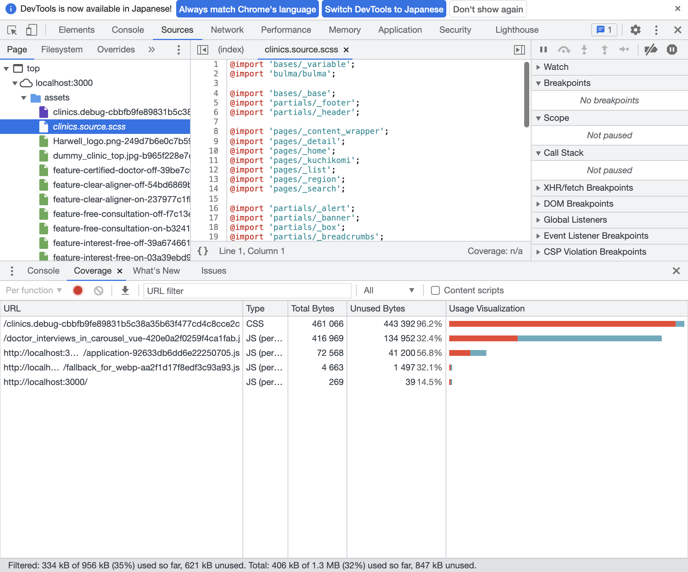
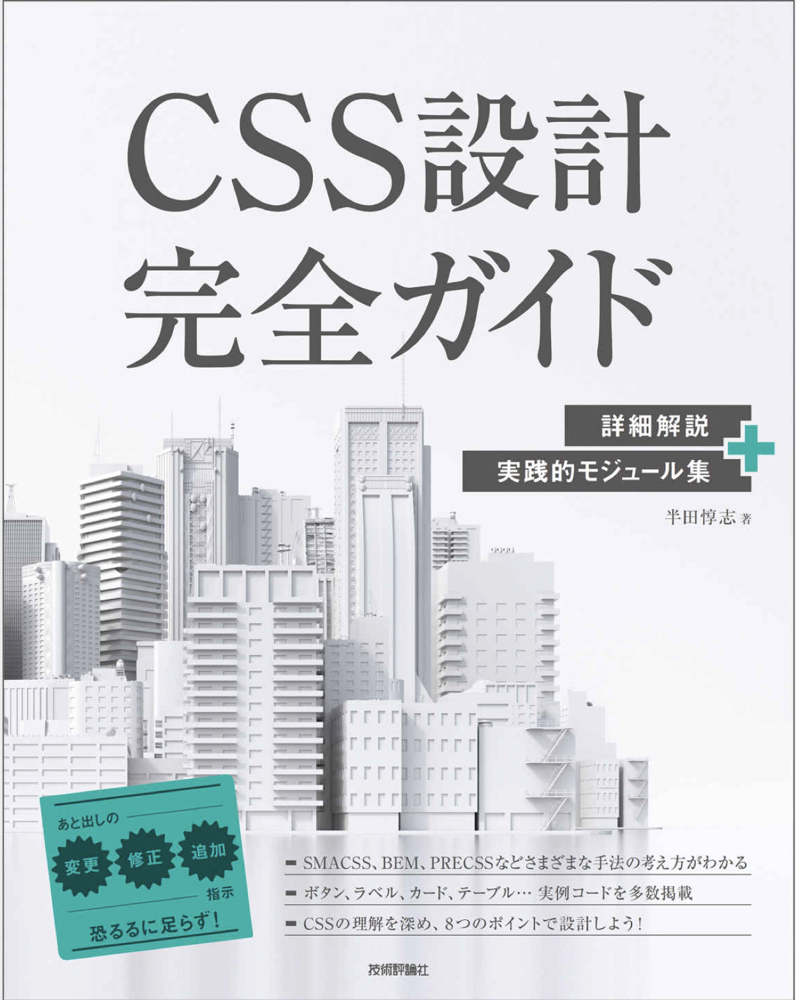
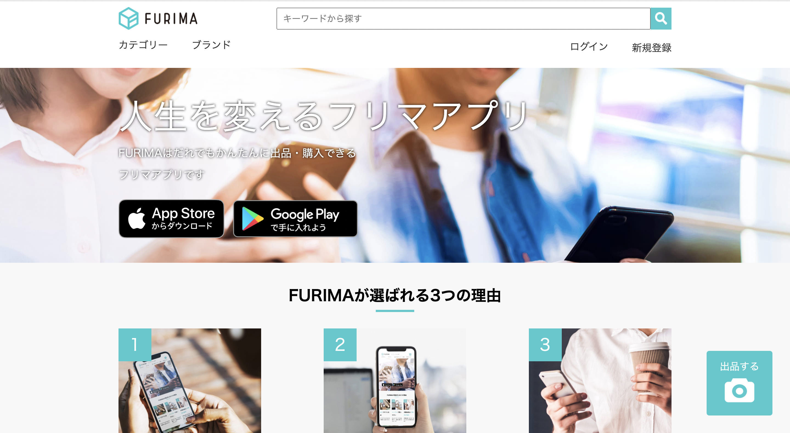
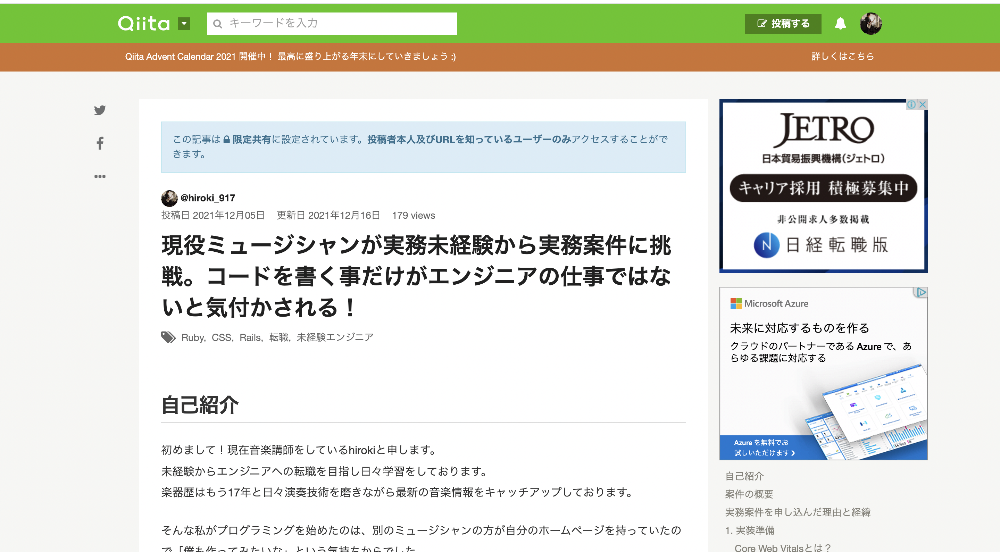
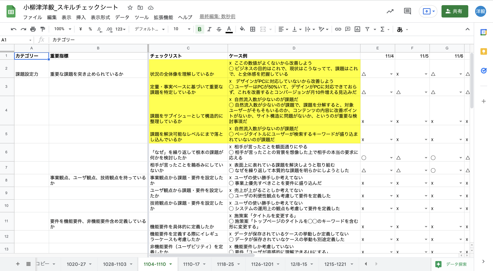
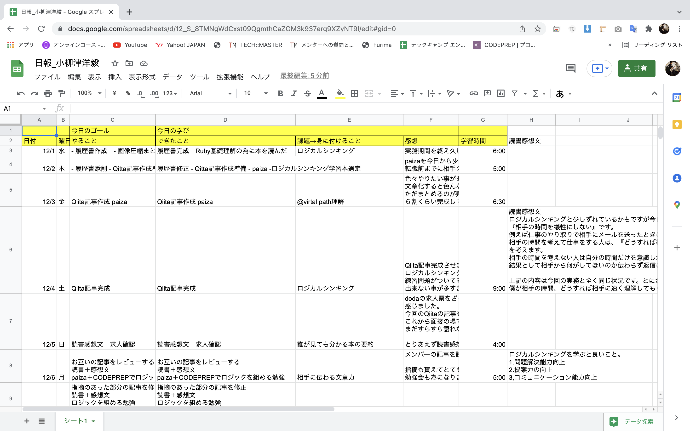

小柳津洋毅 Portfolio Site
自己紹介
パーソナル情報
小柳津 洋毅（おやいづ ひろき）
1986年9月17日生まれ/35歳
経歴
- ・2009年3月 ： 人間環境大学 人間環境学部 人間環境学科 卒業
- ・2011年4月 ： YAMAHAポピュラーミュージックアカデミー入学
- ・2015年3月 ： YAMAHAポピュラーミュージックアカデミー卒業
-
・2015年9月 ： ヤマハ株式会社 音楽講師として入社
■実績
生徒さんに演奏の機会を提供するために、同期の講師グループと演奏発表会を企画した事です。100名以上の方に参加していただけました。各教科の生徒さんの演奏したい曲を決めてもらい、私たち講師陣が演奏サポートをし、バンド形式でステージで演奏して頂きました。その結果『来年も出たい』、『もっと企画して欲しい』とお声を頂けました。
■レッスンで工夫したところ
あらゆる生徒様のニーズに応える為に、生徒様にヒアリングをしノートを取り、自らも流行りの曲を演奏する事によってオーダーメイド型のレッスンを提供できるように努力してきました。 - ・現在転職活動中
2021年に学習したプログラミングスキル
3月25日から現在まで1日も休む事なく継続して学習を続けています
- 3月25〜6月4日( 72 日)独学でProgateやドットインストール等で簡単な飼い猫の紹介ホームページ作成
- 6月5日〜12月4日( 181 日) ： サーバーサイドの学習開始
<学習内容> HTML、CSS、Ruby、Ruby On Rails、JavaScript、Git - 9月29日〜現在 ： 実務案件挑戦
医院紹介サイト（Rails）のSEOとCore Web Vitalsの改善案件
※成果物については下記参照ください
どの様な業務をしたいか
喜びを提供し、人々の役に立てる業務に携わりたいです。
その為に必要な言語やスキルを常に取り入れていける環境で働きたいです。
どの様なエンジニアになりたいか
将来的には開発の上流から下流までを一人で担当できるフルサイクルエンジニアを目標にしています。その為に短期、中期、長期目標として設定しています。短期目標としては開発の業務だったり目の前の与えられた業務は早期にキャッチアップしていきます。
一人前の開発エンジニアになる為にコードを書く事に関しては、積極的に先輩にコードレビューをお願いして誰がみても分かりやすいコードをかけるように誰よりも早く成長したいです。
中期目標はプロジェクトリーダーになってプロジェクトの進捗管理やメンバーへの技術的フォーローをしていきたいです。
長期目標はお客様のニーズを拾い、上流から下流まで一人で任せられるフルサイクルエンジニアになりたいと思っています。
「大きな変化による価値を生み出し、多くの人の役に立ちたい」からです。
実務実績
医院紹介サイトのCore Web Vitalsの改善
実務案件一部資料
実務案件に挑戦しました
Qiita記事課題
- ・企画から実装（上流工程〜下流工程）まで開発の一連の流れを一貫して経験し、作成
- ・企画から実装（上流工程〜下流工程）まで開発の一連の流れを一貫
- ・企画から実装（上流工程〜下流工程）まで開発の一連の流れを一貫
担当
改善方法
補足資料
CSS設計で参考にした書籍
制作物
フリマアプリ
アプリトップページ
アプリの概要
大手フリマサイトを模写したものです。 学習した内容のアウトプットとして掲載しています。ソースコード
GitHub(Furima)アクセス情報
- [ベーシック認証]
user: admin
pw: 2222 - アプリトップページ写真をクリックするとアクセスできます
使用した技術
- ・Ruby on Rails
Qiita記事
Qiitaへアウトプット記事投稿
投稿したQiita記事の一部
Others
もくもく会主催＆スキルチェックリスト
主催したもくもく会の集合写真

スキルチェックリスト
こだわりポイント
- ・週1〜3回のもくもく会を主催しています
- ・メンバーはスクールで出会った仲間とやっています
- ・「約1時間30分のもくもく会」、30分は質問タイム。活発に意見の交換を行う
- ・いずれスクールメンバーを以外の枠を超えて様々な方と交流したいと思っています
日報作成
投稿したQiita記事の一部
{kind=link}
こだわりポイント
- ・1日のやる事を明確化、振り返りを言語化しアウトプット
- ・毎日継続して作成。2ヶ月以上継続
- ・今後も勉強した内容を積極的にアウトプットしていく
→新しい知識をインプットしアウトプットする事を常に意識しています
YouTube動画投稿
演奏動画
演奏動画＆演奏フレーズ解説
- ・リクエスト頂いた曲を弾いて皆さんの参考になれたらと思い、動画作成しました
- ・楽譜を載せて一緒に演奏出来る様に工夫しました（著作権関係は確認取ってます）
リクエスト受付中
- ・楽器弾いた事ない方でもリクエストOKです
- ・ベースを強調させて音作りをしているので、好きな曲を聞いた時に、いつもと違う感覚を味わえると思います
- ・最近はプログラミング学習中に熱中しているので更新がストップしてますが、隙間時間を使って更新していきます
→昔の曲から最近の流行りの曲まで幅広く演奏しています